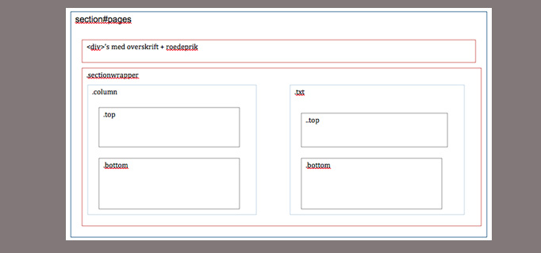

HTML, illustrator og flex
Jeg lavede faktisk min første 'professionelle hjemmeside i 1996. København var kulturby og i den forbindelse lancerede vi projektet "third culture Copenhagen", hvor toppen af poppen indenfor videnskab og kunst skulle mødes på Holmen i København og inspirere hinanden. Det var næsten et krav fra videnskabsfolkene, at der skulle være en web site, hvor de kunne dele 'papers' og tjekke hinanden ud.
Det var tekst, images og en hulens masse grafer - og kun html, som jeg hakkede mig igennem til nogenlunde tilfredshed fra brugerne.
Så det er vel banalt sagt en ny verden for mig, at bruge illstrator, layout diagrammer, flex og css. Men på den totalt fabelagtige fede måde!
Opgaven
Udover at få glimrende kendskab til dadismen, fik jeg også et lille indblik i de andre stilarter via de medstuderendes glimrende oplæg og opgaver.
Struktur
Især vil jeg fremhæve, at jeg er blevet bevidst om struktur på en helt ny måde, og kan sagtens se værdien i at 'organisere' sine ideer, før man bare høvler tekst ind.
Layoutdiagram er ikke bare brugbart til udførsel, men også til mindset omkring at skabe digitalt design.
